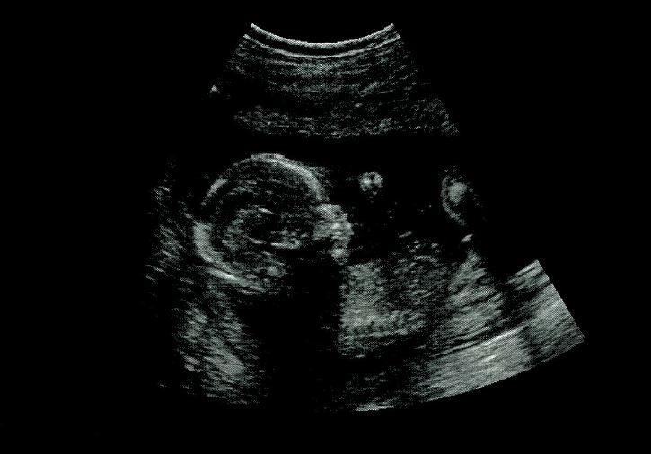

Crying In Utero
Can fetuses feel pain?
Yoojin Lee
Spring 2006

New findings suggest the ability for a fetus to cry, contrary to the
popular belief that the first cry occurs in the delivery room.
Currently, there are five recognized neonatal behavioral states: quiet
sleep, active state, quiet awake, active awake, and crying. With the
exception of crying, all of these states correspond with analogous
behavioral states in fetuses. However, a recent study conducted by
Jeannine Gingras, MD, of the Carolinas Medical Center in Charlotte,
North Carolina and her colleagues reveals what may be best described as
“fetal crying.”
The study, which appeared in the September 2005
issue of Archives of Disease in Childhood: Fetal and Neonatal Edition,
originally aimed to determine the effects of maternal smoking and
cocaine use on fetal development. As part of the investigation, the
researchers observed the behavior of fetuses while a low-decibel noise
played through speakers placed on the stomachs of the pregnant women.
At first, the researchers mistakenly interpreted the fetal responses
recorded in an ultrasound scan as seizures. Surprisingly, upon closer
inspection of the recordings, the researchers discovered
characteristics of crying. This discovery was first noted in the
ultrasound of a 33-week-old fetus. When “startled” with a stimulus –
noise and vibrations similar to a rumbling stomach – the fetus turned
her head and tightened her chest. Movement of the mouth and tongue,
swallowing, heavy irregular breathing, and quivering of the chin
quickly followed.
Ten other fetuses, all 28 weeks or older,
demonstrated similar behavior. These findings may have significant
developmental implications, as crying is a complex behavior that
requires coordination of motor as well as sensory systems. The fetuses
would also require the brain development necessary to sense various
stimuli, process them and initiate appropriate responses. The study’s
other principal investigator, Ed Mitchell, MBBS, from the University of
Auckland in New Zealand, stated that such behavior in third-trimester
fetuses is not surprising, since premature infants born even earlier
than 28 weeks have the ability to cry. No direct comparisons can be
made, however, as infants born prematurely may be at a fundamentally
different developmental stage than fetuses of the same chronological age.
This discovery also challenges a recent
controversial study conducted at the University of California, San
Francisco. As reported in the August 2005 issue of the Journal of the
American Medical Association, Susan J. Lee, JD, Peter Ralston, MD, and
associates systematically reviewed the primary literature pertaining to
fetal pain sensation and concluded fetuses younger than 30 weeks have
not yet developed pain perception and would not require fetal
anesthesia. In spite of the persisting debate over this issue, evidence
for fetal crying and pain perception before 28 weeks is strong. Study
of fetal crying and pain is not only essential for understanding normal
fetal development, but also to determine use of anesthesia during
surgeries that may be painful for the fetus, like abortion.